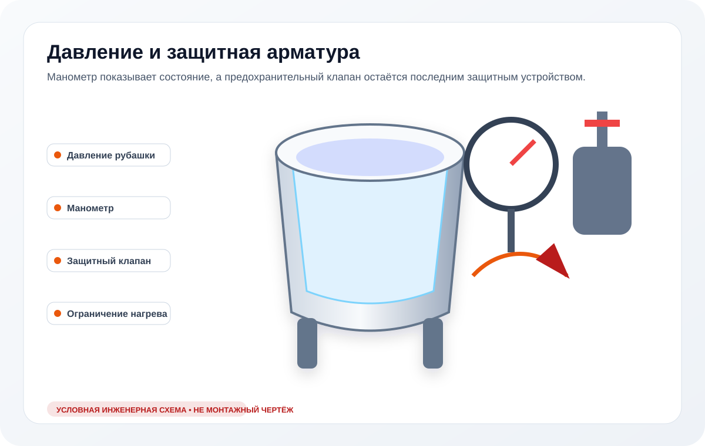

Давление не набирается
Проверяют фактический нагрев, уровень воды, герметичность и достоверность показаний манометра.
Разделяем четыре сценария: давление не растёт, растёт и падает, становится нестабильным либо превышает штатный диапазон. Универсального давления для всех котлов не существует.
Пар, аварийный сброс, E04, необычный шум или быстрый рост давления — основание остановить котёл и не регулировать защитный клапан самостоятельно.
Визуальная схема узла
Манометр, ограничение нагрева и предохранительный клапан выполняют разные функции.

Изображение условное: оно объясняет состав системы, но не заменяет электрическую схему, руководство конкретной модели и измерения на оборудовании.
Фиксируем фактическое проявление
Момент появления симптома и состояние котла до отказа сужают круг проверок лучше, чем предположение о конкретной детали.
Проверяют фактический нагрев, уровень воды, герметичность и достоверность показаний манометра.
Ищут течь рубашки, негерметичность соединений и некорректную работу арматуры.
Проверяют манометр, подводящую трубку, пульсации и состояние рубашки.
Нагрев блокируют и проверяют управление, датчики и защитную арматуру по документации модели.
Функциональные системы
Причина устанавливается измерениями и проверкой последовательности работы конкретной модели.
Показание сначала подтверждают исправным измерением, а не заменяют детали по стрелке.
Недостаточный или некорректно определяемый уровень влияет на нагрев и защитные алгоритмы.
Течь и потеря среды мешают удерживать рабочий режим.
Состояние арматуры проверяют без блокировки и произвольной перенастройки.
Избыточная или недостаточная мощность может быть следствием коммутации, датчика или контроллера.
Диагностика на объекте
Ограничения вывода
Следующий диагностический маршрут
Аварийный сценарий давления для применимых моделей.
Перейти →Показания, трубка подключения и проверка прибора.
Перейти →Герметичность, уровень воды и теплопередача.
Перейти →Потеря давления сопровождается видимой течью.
Перейти →Недостаточный уровень воды в применимых моделях.
Перейти →Давление не растёт из-за отсутствия нагрева.
Перейти →Заявка по пищеварочному котлу
Фото шильдика и панели помогает подготовить измерительные приборы и документацию до выезда.
FAQ
Точное значение зависит от модели, конструкции рубашки и документации производителя. На странице не используется универсальный норматив.
Нет. Сначала подтверждают фактическое давление и причину отклонения; защитную арматуру не блокируют и не перенастраивают без процедуры производителя.
Причиной могут быть отсутствие части мощности, уровень воды, негерметичность, манометр, датчики или управление. Нужна проверка нескольких систем.